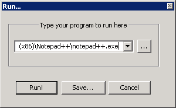

Commands
Commands allow you to execute applications from Notepad++, for example to open your current file in a browser or compile it with some external compiler. You can pass the program command line parameters based on the current status of your document.

To run a new command:
Sselect . A dialog will pop up asking for the path to the program and possible any command line parameters. You can use the browse button to search for your program. The drop down list provides recently run programs. The command line arguments can also be based on the status of the current document, and are always enclosed in $(...), where … can be:
- FULL_CURRENT_PATH
- the fully qualified path to the current document.
- CURRENT_DIRECTORY
- The directory the current document resides in.
- FILE_NAME
- The filename of the document, without the directory.
- NAME_PART
- The filename without the extension.
- EXT_PART
- The extension of the current document.
- NPP_DIRECTORY
- The directory that contains the notepad++.exe executable that is currently running.
- >CURRENT_WORD
- The currently selected text in the document.
- CURRENT_LINE
- The current line number that is selected in the document (0 based index, the first line is 0).
- CURRENT_COLUMN
- The current column the cursor resides in (0 based index, the first position on the line is 0).
For example,
| "$(NPP_DIRECTORY)\notepad++.exe" -multiInst "$(FULL_CURRENT_PATH)" |
would start a new instance of Notepad++ opening the current file. Remember to put quotes around paths if it can contain spaces. For the Notepad++ command line options, see Command Line.
To run an existing command:
Select it from the Run menu below the option. If no commands are saved, the list will be empty.

To save the command:
Sselect , enter the command and press . A dialog will pop up asking for a name of the command and the default key combination. Once saved, the command will be available from the Run menu.
To edit or delete an existing command:
The Shortcut Mapper (see Shortcut Mapper) displays all available commands in a uniform way, so you can modify or delete any shortcut you defined, including commands. This procedure is also available from . As the name suggests, this does not extend to editing the command text proper - you need to edit shortcuts.xml to do that.